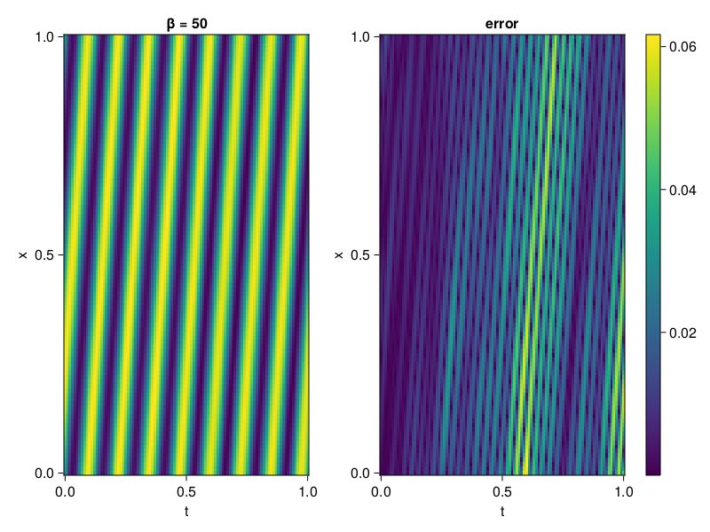

1D Convection Equation
Consider the following 1D-convection equation
\[\begin{aligned} &\frac{\partial u}{\partial t}+c \frac{\partial u}{\partial x}=0, x \in[0,1], t \in[0,1] \\ &u(x, 0)=sin(2\pi x) \\ &u(0,t) = -sin(2\pi ct)\\ &u(1,t) = -sin(2\pi ct) \end{aligned}\]
where $c = 50/2\pi$. First we solve it with QuasiRandomTraining.
using NeuralPDE, Lux, Random, Sophon, IntervalSets, CairoMakie
using Optimization, OptimizationOptimJL, OptimizationOptimisers
using CUDA
CUDA.allowscalar(false)
@parameters x, t
@variables u(..)
Dₜ = Differential(t)
Dₓ = Differential(x)
β = 50
c = β/2π
eq = Dₜ(u(x,t)) + c * Dₓ(u(x,t)) ~ 0
u_analytic(x,t) = sin(2π*(x-c*t))
domains = [x ∈ 0..1, t ∈ 0..1]
bcs = [u(0,t) ~ u_analytic(0,t),
u(1,t) ~ u_analytic(1,t),
u(x,0) ~ u_analytic(x,0)]
@named convection = PDESystem(eq, bcs, domains, [x,t], [u(x,t)])
chain = Siren(2, 1; num_layers = 5, hidden_dims = 50, omega = 1f0)
ps = Lux.initialparameters(Random.default_rng(), chain) |> GPUComponentArray64
discretization = PhysicsInformedNN(chain, QuasiRandomTraining(100); init_params=ps, adaptive_loss = NonAdaptiveLoss(; bc_loss_weights = [100,100,100]))
prob = discretize(convection, discretization)
@time res = Optimization.solve(prob, Adam(); maxiters = 3000)u: ComponentVector{Float64}(layer_1 = (weight = [0.06134925375353275 -0.19993229571757026; 0.022182428545260077 0.09300546817020336; … ; -0.22590070515319818 -0.03587420178656878; -0.2535690693972428 -0.10908639780098499], bias = [0.010381869504166578; -0.02352821513130635; … ; 0.09758648058420966; -0.0028735435268458166;;]), layer_2 = (weight = [0.05240428735763566 -0.23385427922242494 … 0.21586833795407534 -0.04519927108452973; -0.20098646767789832 -0.09866077305089803 … -0.056628842898750885 0.19621425218997984; … ; -0.314638107540303 -0.23822214824581686 … -0.3127223951807622 -0.1437288314497469; 0.3746816493005917 0.1299202864446229 … 0.11145630744719924 0.3778322676778548], bias = [0.17827672721853371; -0.055410534857001294; … ; 0.02650713186978623; -0.06454558143680324;;]), layer_3 = (weight = [-0.06794833939627187 0.10697444300356646 … -0.2503987948643175 0.1355933830742594; -0.2601379447673866 -0.07722057950619268 … -0.06564120372288171 0.27058083041220443; … ; -0.14745905174013704 0.3413117686446237 … 0.16694615823472067 0.02494365581069576; -0.15387581404935358 -0.2051791134512585 … -0.33801171740997277 -0.0962196542416355], bias = [-0.06700154978774688; -0.07445846597223361; … ; -0.05735207836340045; -0.040968107714442877;;]), layer_4 = (weight = [0.26645380796690227 0.3637382317007392 … 0.36511977464577483 -0.025332927071435106; -0.33505845167330683 -0.11506258102515855 … -0.3241631400587238 -0.13715726176109785; … ; 0.24354835603879157 -0.2766610353606051 … -0.31329056710497627 0.038392459572375075; 0.18979484734543967 0.3938587615211902 … -0.0800457033555126 -0.20820270336863775], bias = [-0.055972725560121686; 0.061389183619150973; … ; 0.021052112288757568; -0.03378768218279043;;]), layer_5 = (weight = [0.28235274966905904 -0.18159124092602294 … 0.011901167396656044 -0.17680482145586143; 0.26220716506229225 0.1980105479110382 … 0.23160173780657672 -0.33304549780772513; … ; -0.3373922668898254 -0.20475875695881524 … -0.022267093523922872 -0.30787280696181785; 0.0018153044828003169 -0.2751660648733421 … -0.3689489107421907 0.306929544013115], bias = [-0.004045640140345041; 0.024074115340806772; … ; -0.0012576566446366479; -0.038280230997281804;;]), layer_6 = (weight = [0.1321387511734705 -0.2891476747554482 … 0.3113712637096401 -0.12658848205221865], bias = [0.009405866349887576;;]))Let's visualize the result.
phi = discretization.phi
xs, ts= [infimum(d.domain):0.01:supremum(d.domain) for d in domains]
u_pred = [sum(phi(gpu([x,t]),res.u)) for x in xs, t in ts]
u_real = u_analytic.(xs,ts')
axis = (xlabel="t", ylabel="x", title="β = $β")
fig, ax, hm = CairoMakie.heatmap(ts, xs, u_pred', axis=axis)
ax2, hm2 = heatmap(fig[1,end+1], ts,xs, abs.(u_pred' .- u_real'), axis = (xlabel="t", ylabel="x", title="error"))
Colorbar(fig[:, end+1], hm2)
Compared to Method of Lines
using MethodOfLines
dx = 0.001
order = 4
mol_discretization = MOLFiniteDifference([x => dx], t, approx_order = order)
# Convert the PDE problem into an ODE problem
prob = discretize(convection,mol_discretization)
# Solve ODE problem
using OrdinaryDiffEq
sol = solve(prob, Tsit5(), saveat=0.001)
grid = get_discrete(convection, mol_discretization)
discrete_x = grid[x]
discrete_t = sol[t]
solu = [map(d -> sol[d][i], grid[u(x, t)]) for i in 1:length(sol[t])]
u_pred = hcat(solu...)
fig_, ax, hm = CairoMakie.heatmap(ts, xs, u_pred', axis=axis)
ax2, hm2 = heatmap(fig_[1,end+1], ts,xs, abs.(u_pred' .- u_analytic.(discrete_x, discrete_t')'), axis = (xlabel="t", ylabel="x", title="error"))
Colorbar(fig_[:, end+1], hm2)